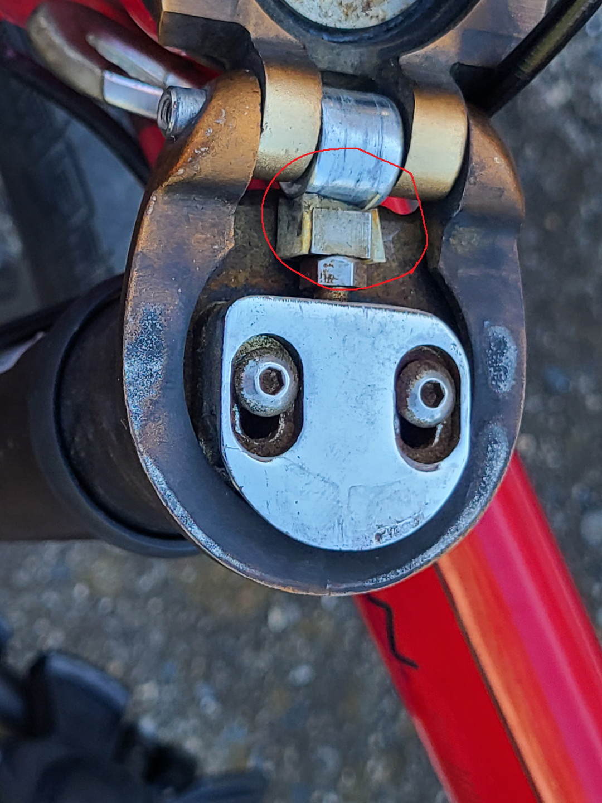
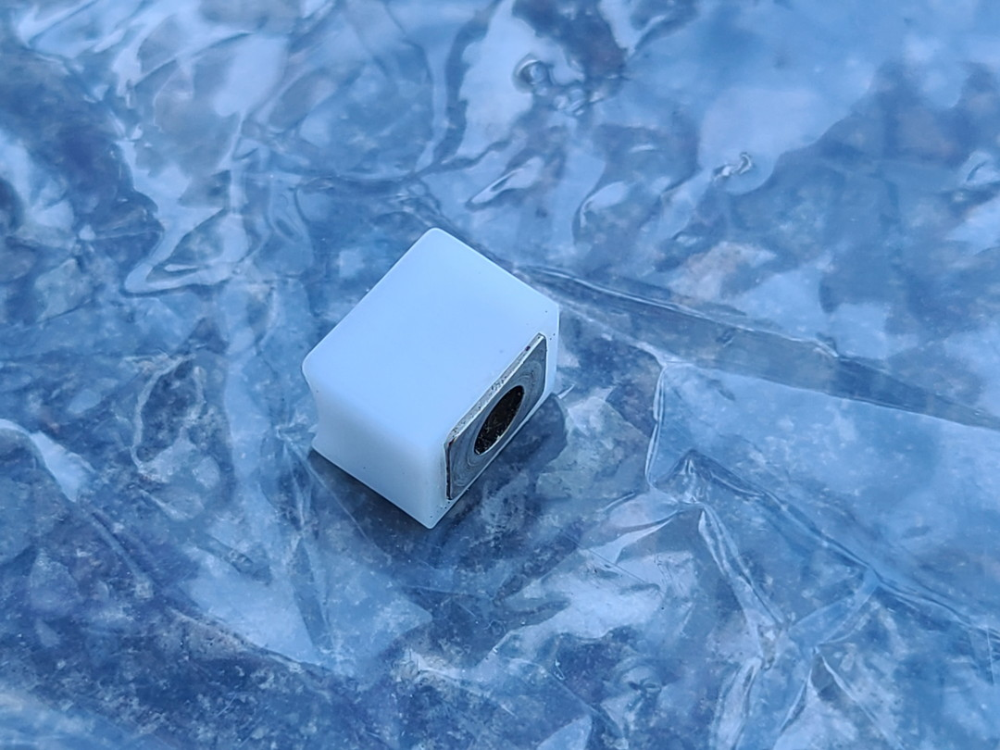
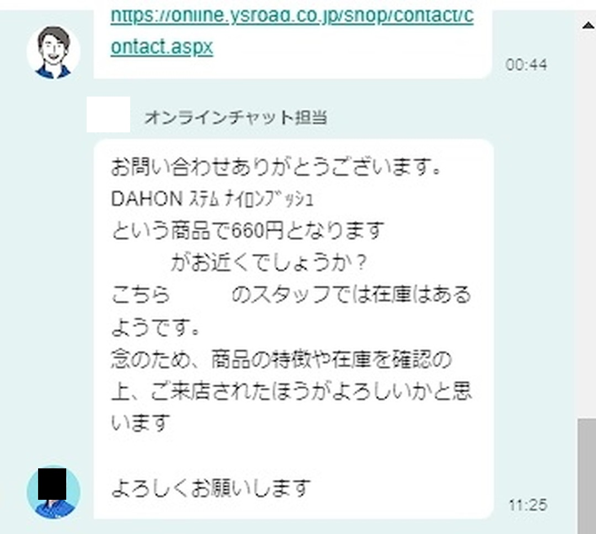
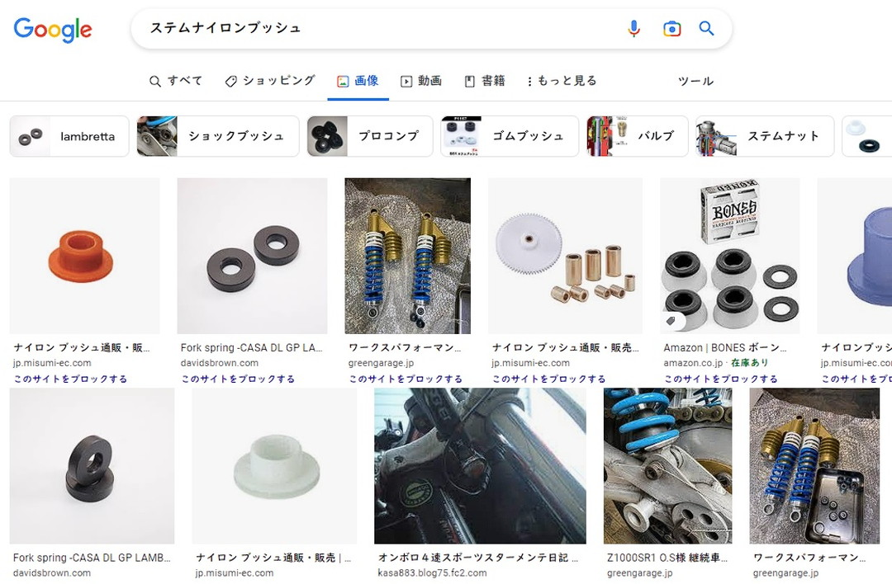
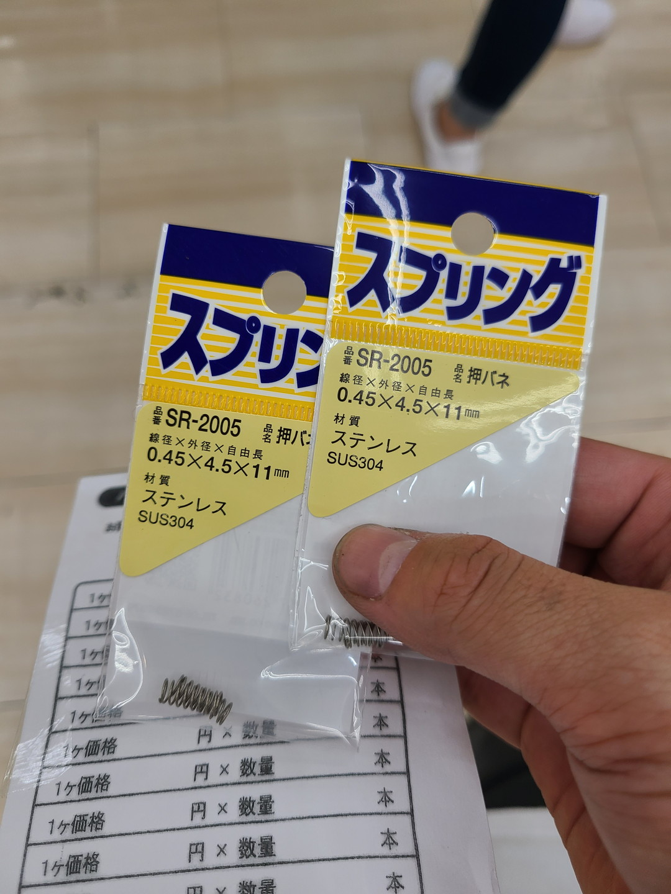

投稿日2022-10-16
- ハンドルがぐらつく
- 楽天
- HollandBikeShop
- AliExpress
- 実店舗
- 目次
- 販売店舗を検索
ハンドルがぐらつく
ここ最近のSPEED P8君のハンドルポスト、ステムの部分がぐらつく。原因は明らかだった。

赤丸で囲んだ部分、DAHONの折りたたみ機構の中でも大切なパーツである
が割れていた。プラスチック製なので経年劣化し易い。そして独自パーツなので入手性も低い。だからといって放置すると折りたたみができなくなってしまう重要なパーツなのだ。
一応楽天では売っているものの果たしてこれは正規の値段なのか。疑問に思ったので色々としらべてみた。
HollandBikeShop
名前の通りオランダのECサイトである。ここでは"DAHON Stem Hinge Block"だとか"DAHON Stem Locking Block"とか言う名前で400円弱で売っていた。 だが、送料が高い。私は利用したことがないが実際に利用した人のブログや公式サイトの情報では日本に輸入すると5000円もかかってしまう。さすがにトーフ1個にそんな金かけられないので却下。
Ali Express
言わずとしれた中華ECサイトAli Express。探すのは大変だったがなんとか見つかった。ステムアクセサリーだとかなんとかいう名称が用いられている。パッケージに深センの会社が書いてあったのでディーラー用を流してるのかもしれない。
価格は送料合わせて600円程度と割と安い。ただAliなのでいつ届くかはわからないけれど……。
実店舗
実店舗で取り扱いがありそうなところを絞るためにDAHON公式サイトのディーラー一覧を見た。
そこから比較的近く、ミニベロ界隈で有名な橋輪さんに連絡をとったところ在庫ありだったのでサイクリングついでに買いに行った。

新品のトーフ、純白である。価格は660円だった。
トーフ、君の名は
Y`sロードさんにも問い合わせてみた。そうするととんでもない事実が発覚した。

ステムナイロンブッシュ！お前の名前はそうだったのか。その後御徒町に行った友人も”ステムナイロンブッシュ”という名前で店頭に置かれていたのを発見したので正式名称に間違いはない。ちなみにどこの店舗も660円なのでこれが正規の値段だろう。 結局店によってはあったりなかったりだったので公式ディーラー店に問い合わせてみるのが一番てっとり早い。あれば660円で買える。
公式名称で調べてみると

と、びっくりするくらい公式名称がネットで浸透していないのである。なのでこれからはステムナイロンブッシュって言うとDAHON通を気取れますよ。皆さん、トーフじゃなくてステムナイロンブッシュですからね。ステムナイロンブッシュ。などと小学生のように知ったばかりの知識を吹聴しつつ本題である付け替えを行うのであった。
交換、紛失するスプリング
さて色々なサイトを参考にしながら早速交換をしよう。 などのサイトを参考にしながら進めていた。ここらへんはもうたくさん記事があるから説明しなくていいよね……。 順調に進めてたら……
ピョーン
バネはどこかへいってしまった！▼
……。めのまえがまっくらになった。
ひんしのP8とともに急いでホームセンターへむかうのであった。

あぶないあぶない。事前に友人とスプリングの長さを確認しておいて良かった。
一応アフィリエイトリンク貼っておくがホームセンターに行くと200円前後で買えるということも伝えておく。ただ置いてあるかは運ゲーになるけど。
感想
普通にガタツキはなくなって漕ぎやすくなった。ただ思ったより作業が大変だったので不器用には辛かった。ちなみに友人はスッと替えていたので自分が何かを勘違いしている可能性はある。 正直今回DAHONのトーフの正式名称をひけらかしたいがために記事書いたのでもう言うことがない。
みなさーん！DAHONのトーフはステムナイロンブッシュですよ！ステムナイロンブッシュ！価格は660円！……はい。ごめんなさい。ではまた～。